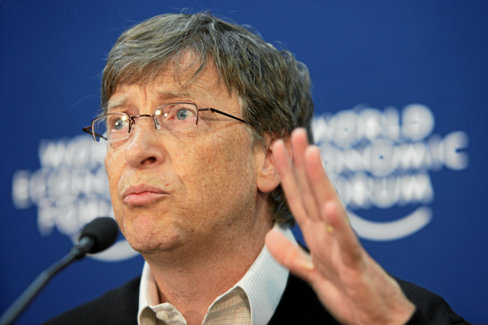
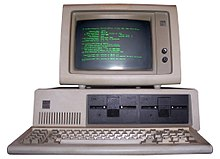

Aportaciones Importantes de Bill Gates
| Aportacion | Descripcion | Imagen |
|---|---|---|
| Creación del S.O Windows | Si por algo es bien conocido Bill Gates es por haber creado el sistema operativo Windows junto a Paul Allen. Ambos dieron sus primeros pasos en el año 1985, cuando se publicó la primera versión de Windows, aunque no tuvo demasiado éxito. Fue en diciembre de 1987 cuando la versión 2.0 salió al mercado, la cual tuvo un impacto muy positivo en la sociedad. En mayo de 1990 llegó al mercado la primera versión que se popularizó, la 3.0. | < |
| Fundación William H. Gates | En 1994, se creó la Fundación William H. Gates, para el año 2000 esta fundación se fusiona con la Fundación Gates para el aprendizaje, y se renombra como la Fundación Bill y Melinda Gates, es una fundación dedicada a temas de salud y de educación | < |
| Popularizar el uso del ordenador personal | El origen del ordenador personal se remontó al año 1975. Bill Gates y Paul Allen negociaron la adquisición del intérprete del lenguaje Basic para el Altair 8800, uno de los ordenadores más populares de la época. A diferencia de la estrategia que seguía Apple, Microsoft sí prestaba su sistema operativo a las empresas de hardware. Esto hizo que fuera introducido en prácticamente todos los dispositivos que se desarrollaban y logró ser distribuido a gran escala por todo el mundo. | < |
| Xbox | Es una marca de videojuegos creada por Microsoft que incluye una serie de videoconsolas desarrolladas por la misma compañía, de sexta a novena generación, así como aplicaciones (juegos), servicios de streaming y el servicio en línea Xbox Live. | < |
| Microsoft Office | Es una suite ofimática que abarca el mercado completo en Internet e interrelaciona aplicaciones de escritorio, servidores y servicios para los sistemas operativos Microsoft Windows, Mac OS X, iOS y Android.. | < |
Para volver a la pagina principal con la informacion general de Bill Gates, presiona la palomita c: